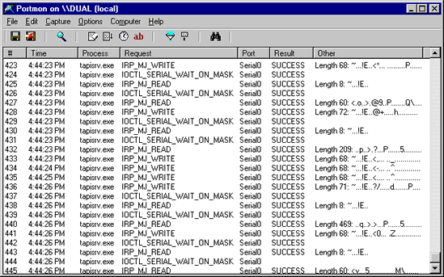

Portmon is a utility that monitors and displays all serial and parallel port activity on a system. It has advanced filtering and search capabilities that make it a powerful tool for exploring the way Windows works, seeing how applications use ports, or tracking down problems in system or application configurations.
Portmon works on NT 4.0, Win2K, XP and Server 2003, Windows 95 and Windows 98.
Version 3.x of Portmon marks the introduction of a number of powerful features.
The on-line help-file describes all these features, and more, in detail.
Simply execute the Portmon program file (portmon.exe) and Portmon will immediately start capturing debug output. To run Portmon on Windows 95 you must get the WinSock2 update from Microsoft. Note that if you run Portmon on Windows NT/2K portmon.exe must be located on a non-network drive and you must have administrative privilege. Menus, hot-keys, or toolbar buttons can be used to clear the window, save the monitored data to a file, search output, change the window font, and more. The on-line help describes all of Portmon's features.
Portmon understands all serial and parallel port I/O control (IOCTLs) commands and will display them along with interesting information regarding their associated parameters. For read and write requests Portmon displays the first several dozen bytes of the buffer, using '.' to represent non-printable characters. The Show Hex menu option lets you toggle between ASCII and raw hex output of buffer data.
The Portmon GUI is responsible for identifying serial and parallel ports. It does so by enumerating the serial ports that are configured under HKEY_LOCAL_MACHINE\Hardware\DeviceMap\SerialComm and the parallel ports defined under HKEY_LOCAL_MACHINE\Hardware\DeviceMap\Parallel Ports. These keys contain the mappings between serial and parallel port device names and the Win32-accessible names.
When you select a port to monitor, Portmon sends a request to its device driver that includes the NT name (e.g. \device\serial0) that you are interested in. The driver uses standard filtering APIs to attach its own filter device object to the target device object. First, it uses ZwCreateFile to open the target device. Then it translates the handle it receives back from ZwCreateFile to a device object pointer. After creating its own filter device object that matches the characteristics of the target, the driver calls IoAttachDeviceByPointer to establish the filter. From that point on the Portmon driver will see all requests aimed at the target device.
Portmon has built-in knowledge of all standard serial and parallel port IOCTLs, which are the primary way that applications and drivers configure and read status information from ports. The IOCTLs are defined in the DDK file \ddk\src\comm\inc\ntddser.h and \ddk\src\comm\inc\ntddpar.h, and some are documented in the DDK.
On Windows 95 and 98, the Portmon GUI relies on a dynamically loaded VxD to capture serial and parallel activity. The Windows VCOMM (Virtual Communications) device driver serves as the interface to parallel and serial devices, so applications that access ports indirectly use its services. The Portmon VxD uses standard VxD service hooking to intercept all accesses to VCOMM's functions. Like its NT device driver, Portmon's VxD interprets requests to display them in a friendly format. On Win9x Portmon monitors all ports so there is no port selection like on NT.
Here are some other monitoring tools available at Sysinternals:
In order to help us track its use, please download through the link that represents the operating system on which you will use or mostly use Portmon. Note that the zip files are identical, and Portmon runs on either platform.
Download Portmon (x86 - 52KB) - you plan on using Portmon on Win9x
Download Portmon (x86 - 52KB) - you plan on using Portmon on WinNT